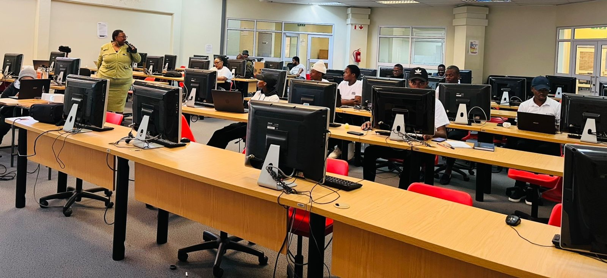

Driving institutional excellence through strategic oversight, performance monitoring, and evidence-based decision-making.
Three specialized units working together to drive institutional excellence
Data-driven insights and strategic planning to support evidence-based decision-making and institutional growth.
Ensuring excellence through comprehensive quality assurance, enhancement, and promotion initiatives.
Strategic academic oversight ensuring programme quality, compliance, and institutional academic excellence.
Who We Are
The Planning, Monitoring and Evaluation (PME) Directorate serves as the central coordination hub for institutional oversight, performance assurance, and strategic alignment across Walter Sisulu University.
We provide leadership in institutional research, quality management, and academic planning to support the University's vision of being a leading comprehensive institution.

Latest Updates

The PME Directorate has officially published the 2024 Annual Performance Report, highlighting key achievements across WSU.
Read More →
PME hosted a training session on data quality, compliance standards, and reporting protocols for all academic units.
Read More →
PME introduced a new initiative to strengthen alignment between faculty operational plans and the institutional strategic plan.
Read More →Calendar
Data & Insights
New PME reports and dashboards are currently being finalised. Check back soon.